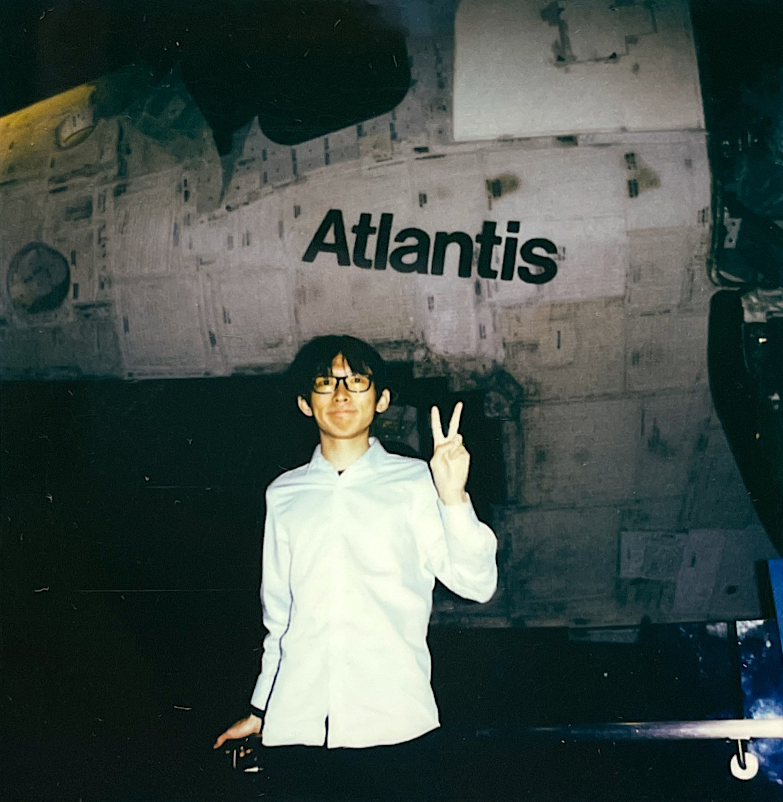

I am a passionate Game Developer and Technical Artist with experience in Unity and Unreal Engine. My expertise lies in computer graphics and visual effects, and I’m driven to create immersive, visually striking VFX that captivate audiences and bring virtual worlds to life.